Architectural photography is the photographing of buildings and similar structures that are both aesthetically pleasing and accurate representations of their subjects. Architectural photographers are usually skilled in the use of specialized techniques and equipment.
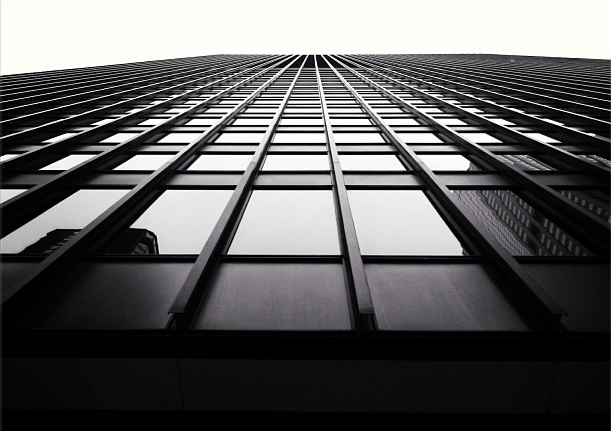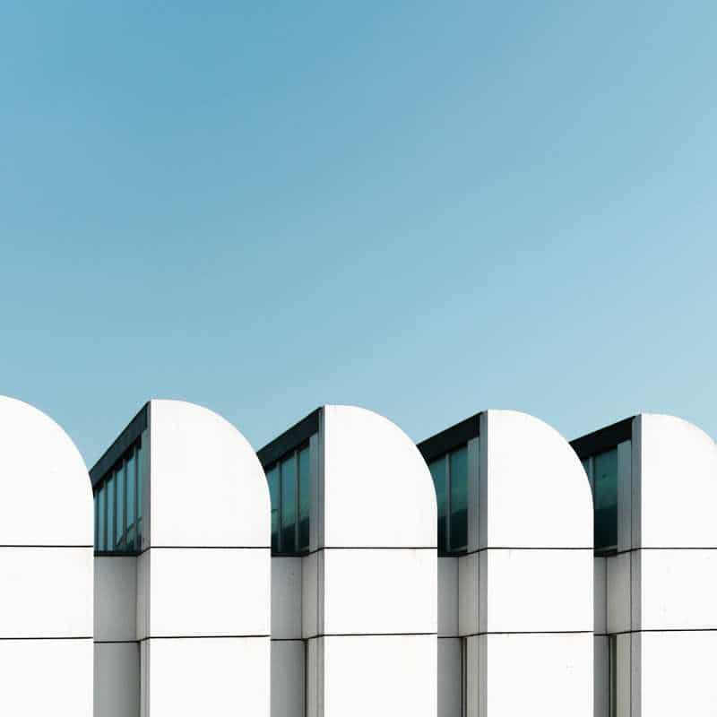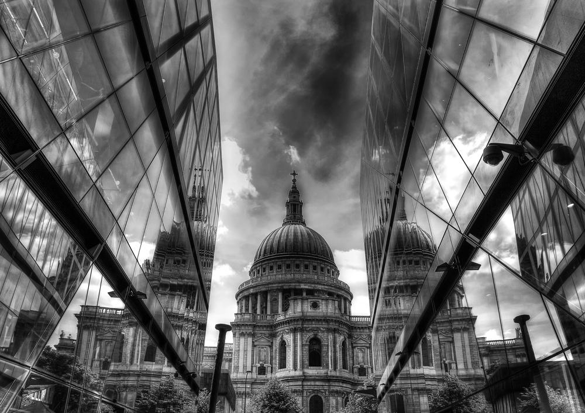
Landscape photography shows spaces within the world, sometimes vast and unending, but other times microscopic. Landscape photographs typically capture the presence of nature but can also focus on man-made features or disturbances of landscapes.
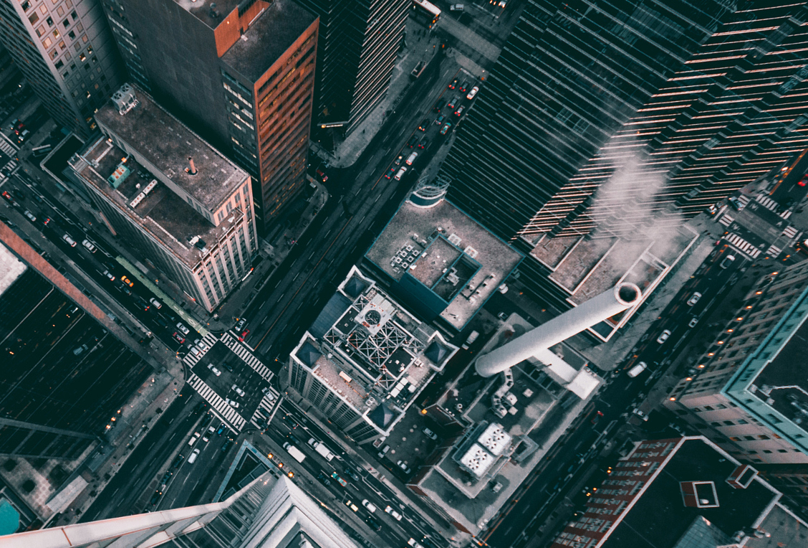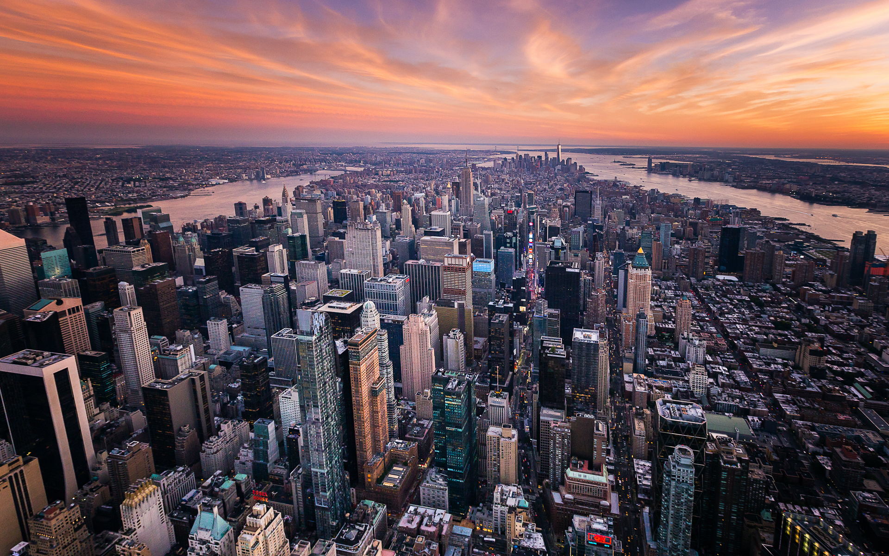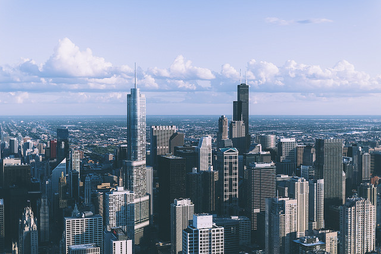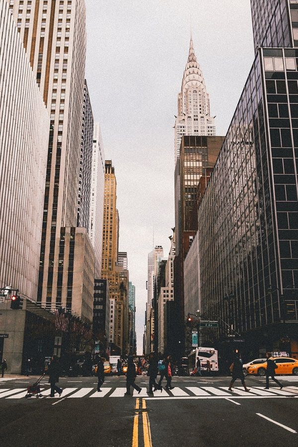
Night photography refers to photographs taken outdoors between dusk and dawn. Night photographers generally have a choice between using artificial light and using a long exposure, exposing the scene for seconds, minutes, and even hours in order to give the film or digital sensor enough time to capture a usable image.
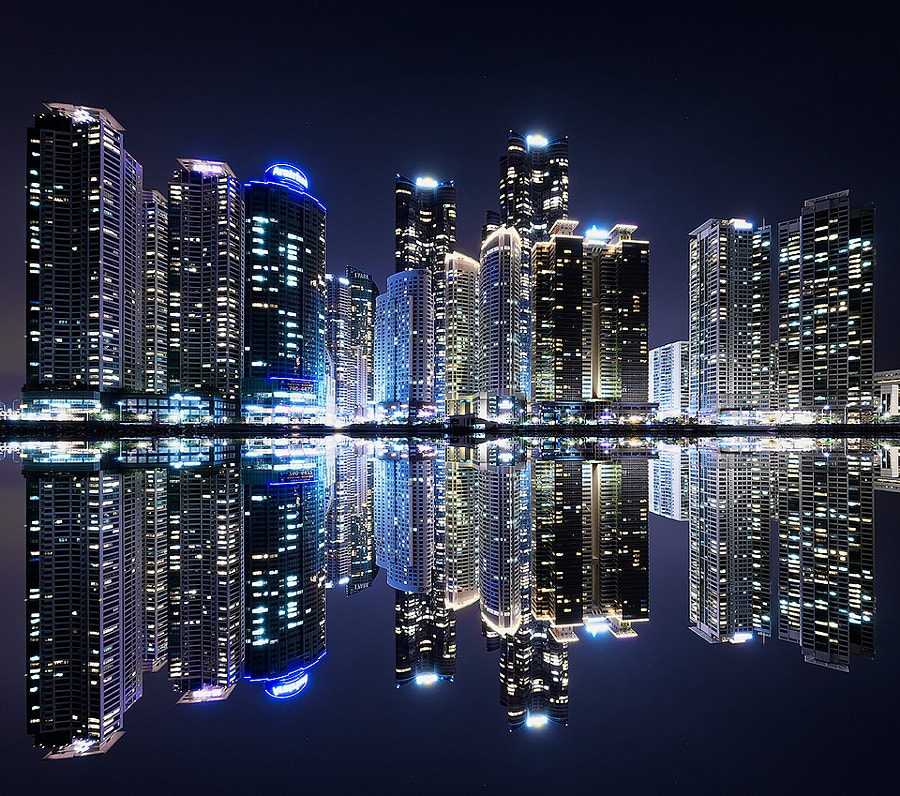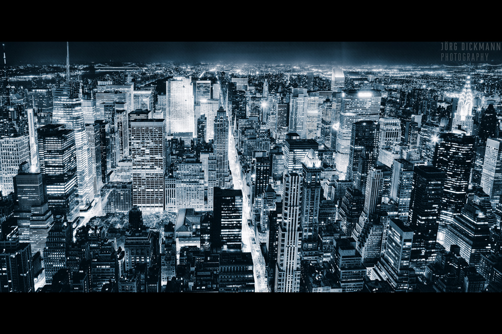
Macro photography is extreme close-up photography, usually of very small subjects and living organisms like insects, in which the size of the subject in the photograph is greater than life size.
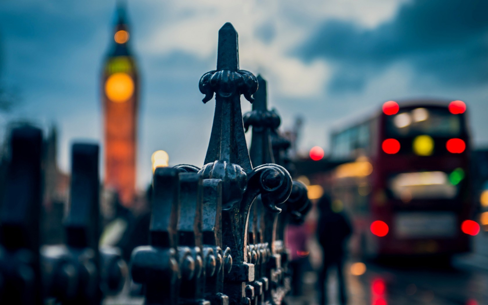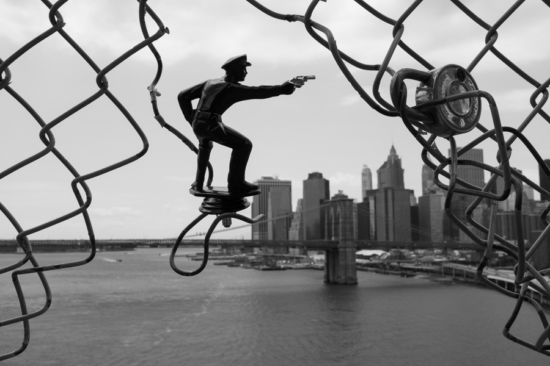